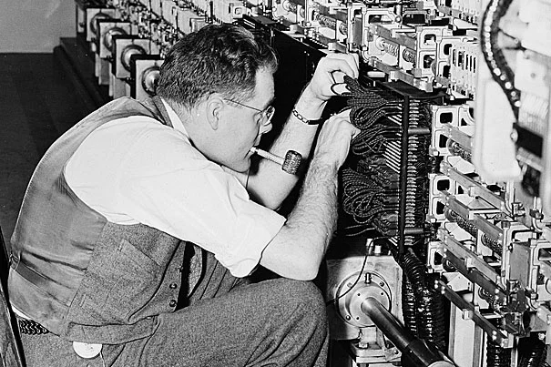

Artificial Intelligence - History
The history of artificial intelligence (AI) spans several decades and is marked by key milestones and technological advancements.

Early Beginnings
1950s: The concept of AI was formally introduced. Alan Turing, a British mathematician, proposed the Turing Test to determine a machine's ability to exhibit intelligent behavior indistinguishable from that of a human. In 1956, the term "artificial intelligence" was coined at the Dartmouth Conference, marking the birth of AI as a field of study.
Formitive Years
1960s-1970s: Early AI research focused on problem-solving and symbolic methods. Programs like ELIZA, an early natural language processing computer program, and Shakey, the first general-purpose mobile robot, were developed. However, limitations in computational power and understanding led to the "AI winter," periods of reduced funding and interest.
Revival and Growth
1980s-1990s: AI research experienced a resurgence with the advent of expert systems, which used knowledge-based approaches to solve specific problems. The development of machine learning algorithms and advances in computer hardware also played a significant role. Notable achievements include IBM's Deep Blue defeating chess champion Garry Kasparov in 1997.